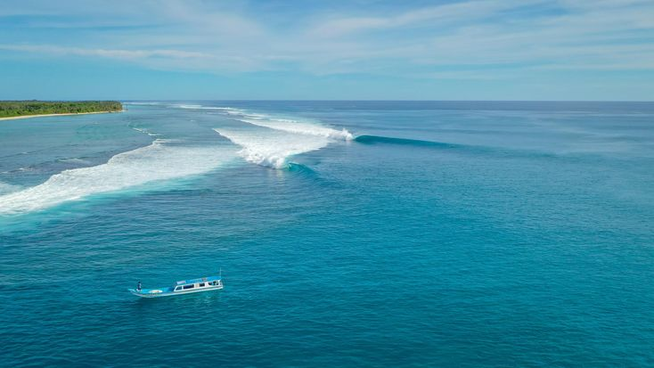
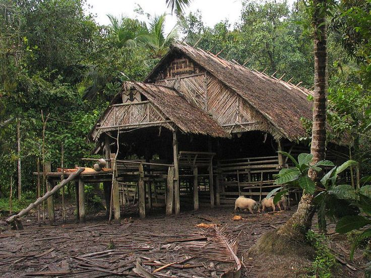
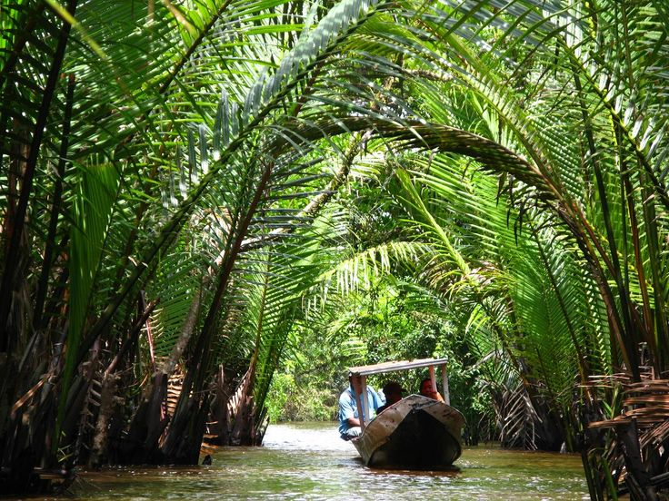

Pantai & SelancarPantai Kandui
Memadukan keindahan pasir putih yang landai dan gulungan reef break kelas dunia, tempat ini selalu menjadi surga favorit peselancar internasional di musim ombak.
Mulai dari ombak impian para peselancar, petualangan di tengah rimbunnya hutan, sampai pesona air terjun yang masih tersembunyi, destinasi-destinasi ini wajib ada di bucket list mu.

Pantai & SelancarMemadukan keindahan pasir putih yang landai dan gulungan reef break kelas dunia, tempat ini selalu menjadi surga favorit peselancar internasional di musim ombak.

Hutan MentawaiMenerobos lebatnya kanopi rimba, jalur trekking ini menawarkan kesempatan langka untuk menjumpai Bilou dan Joja di habitat asli mereka
 Air Terjun
Air Terjun
Perjalanan tempuh satu jam lebih dari Desa Muara Siberut akan membawamu ke kolam alami berundak di tengah hutan sebuah air terjun asri yang menyegarkan yang masih tersembunyi.

Susur SungaiMenyusuri sungai dengan perahu menuju pemukiman di pedalaman, rute perairan ini merupakan urat nadi kehidupan utama bagi masyarakat Mentawai.
 Bawah Laut
Bawah Laut
Spot snorkeling dangkal dengan visibilitas tinggi, cocok untuk pemula yang ingin melihat biota laut Mentawai yang indah dan masih terjaga kealamiannya.